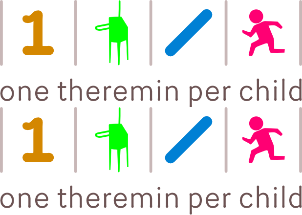

2011
One Theremin Per Child
An open source project to create a sub-$30, quality theremin. With all due respect for the One Laptop Per Child program (which is not in any way related), the OTPC acronym can also expand to "Obligatory Theremin Parts Collection".